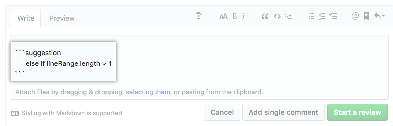

Gitflow Workflow
The Gitflow Workflow defines a strict branching model designed around the project release. This provides a robust framework for managing business critical projects.
Gitflow is ideally suited for projects that have a scheduled release cycle. It assigns very specific roles to different branches and defines how and when they should interact. In addition to feature branches, it uses individual branches for preparing, maintaining, and recording releases.
TL;DR
Gitflow is one of two styles of branching workflows you and your team can utilize.
Some key takeaways to know about Gitflow are:
- Master is production ready
- Master is deployed to production
- Development happens in a development branch, which in turn has feature branches
- Deploy when the development of a release is finished and validated
- Requires a validation for each release
Gitflow is based in two main branches with infinite lifetime:
master— this branch contains production code. All development code is merged into master eventually.develop— this branch contains pre-production code. When the features are finished then they are merged into develop.
During the development cycle, a variety of supporting branches are used:
feature-*— feature branches are used to develop new features for the upcoming releases. May branch off from develop and must merge into develop.hotfix-*— hotfix branches are necessary to act immediately upon an undesired status of master. May branch off from master and must merge into master and develop.release-*— release branches support preparation of a new production release. They allow many minor bug to be fixed and preparation of meta-data for a release. May branch off from develop and must merge into master and develop.
Getting Started
Gitflow is really just an abstract idea of a Git workflow. This means it dictates what kind of branches to set up and how to merge them together. We will touch on the purposes of the branches below. The git-flow toolset is an actual command line tool that has an installation process.
Installation
On OSX systems, you can execute brew install git-flow. On Linux install gitflow-avh with your favorite package manager.
How it works

Develop and Master Branches
Instead of a single master branch, this workflow uses two branches to record the history of the project. The master branch stores the official release history, and the develop branch serves as an integration branch for features.
The first step is to complement the default master with a develop branch. A simple way to do this is for one developer to create an empty develop branch locally and push it to the server:
git branch develop
git push -u origin develop
This branch will contain the complete history of the project, whereas master will contain an abridged version. Other developers should now clone the central repository and create a tracking branch for develop.
When using the git-flow extension library, executing git flow init on an existing repo will create the develop branch:
$ git flow init
Initialized empty Git repository in ~/project/.git/
No branches exist yet. Base branches must be created now.
Branch name for production releases: [master]
Branch name for "next release" development: [develop]
How to name your supporting branch prefixes?
Feature branches? [feature/]
Release branches? [release/]
Hotfix branches? [hotfix/]
Support branches? [support/]
Version tag prefix? []
$ git branch
* develop
master
Feature Branches
Each new feature should reside in its own branch, which can be pushed to the central repository for backup/collaboration. But, instead of branching off of master, feature branches use develop as their parent branch. When a feature is complete, it gets merged back into develop. Features should never interact directly with master.

Creating a feature branch
Without the git-flow extensions:
git checkout develop
git checkout -b feature_branch
When using the git-flow extension:
git flow feature start feature_branch
Continue your work and use Git like you normally would.
Release Branches

Once develop has acquired enough features for a release (or a predetermined release date is approaching), you fork a release branch off of develop. Creating this branch starts the next release cycle, so no new features can be added after this point—only bug fixes, documentation generation, and other release-oriented tasks should go in this branch. Once it's ready to ship, the release branch gets merged into master and tagged with a version number. In addition, it should be merged back into develop, which may have progressed since the release was initiated.
Using a dedicated branch to prepare releases makes it possible for one team to polish the current release while another team continues working on features for the next release. It also creates well-defined phases of development (e.g., it's easy to say, “This week we're preparing for version 4.0,” and to actually see it in the structure of the repository).
A new release branch can be created using the following methods.
Without the git-flow extensions:
git checkout develop
git checkout -b release/0.1.0
When using the git-flow extensions:
$ git flow release start 0.1.0
Switched to a new branch 'release/0.1.0'
Once the release is ready to ship, it will get merged it into master and develop, then the release branch will be deleted. It’s important to merge back into develop because critical updates may have been added to the release branch and they need to be accessible to new features.
To finish a release branch, use the following methods:
Without the git-flow extensions:
git checkout master
git merge release/0.1.0
Or with the git-flow extension:
git flow release finish '0.1.0'
Hotfix Branches

Maintenance or “hotfix” branches are used to quickly patch production releases. Hotfix branches are a lot like release branches and feature branches except they're based on master instead of develop. This is the only branch that should fork directly off of master. As soon as the fix is complete, it should be merged into both master and develop (or the current release branch), and master should be tagged with an updated version number.
Having a dedicated line of development for bug fixes lets your team address issues without interrupting the rest of the workflow or waiting for the next release cycle. You can think of maintenance branches as ad hoc release branches that work directly with master. A hotfix branch can be created using the following methods:
Without the git-flow extensions:
git checkout master
git checkout -b hotfix_branch
When using the git-flow extensions:
$ git flow hotfix start hotfix_branch
Similar to finishing a release branch, a hotfix branch gets merged into both master and develop.
git checkout master
git merge hotfix_branch
git checkout develop
git merge hotfix_branch
git branch -D hotfix_branch
$ git flow hotfix finish hotfix_branch
Review
The next section explains how to get a feature reviewed, approved, and merged into the development branch.
Review feature branches
Open a Pull Request

Pull Requests initiate discussion about your commits. Because they're tightly integrated with the underlying Git repository, anyone can see exactly what changes would be merged if they accept your request.
You can open a Pull Request at any point during the development process: when you have little or no code but want to share some screenshots or general ideas, when you're stuck and need help or advice, or when you're ready for someone to review your work. By using GitHub's @mention system in your Pull Request message, you can ask for feedback from specific people or teams.
More information on how to make a pull request can be found on github.
Describe how to test your changes
Pull Requests frame a problem by describing it. Maybe you're trying to fix a bug, add a feature, or trying out a new code pattern. Having a proper problem description ensures that your reviewer knows what their getting into.
To let your reviewer know how to run your code, describe how to test it properly. Lay out a scenario that gives a basic runthrough from set up to expected outcome.
The usual template goes like this:
This PR solves the waterleak in the coffee machine, fixes issue #33.
How to test :
0. Clone this feature! `git clone -b your-awesome-feature https://github.com/clinical-genomics/<your-repo>`
1. copy test db
2. test feature
Expected outcome:
leak is now solved!
Are there multiple angles you can test your feature with? Awesome! Specify a test case for each scenario.
Not only does this help your reviewer navigate your code, it also helps you. By describing the feature step by step for someone else, it ensures you have not missed anything critical.
Discuss and review your code

Once a Pull Request has been opened, the person or team reviewing your changes may have questions or comments. Read how to request a pull request review.
You can also continue to push to your branch in light of discussion and feedback about your commits. If someone comments that you forgot to do something or if there is a bug in the code, you can fix it in your branch and push up the change. GitHub will show your new commits and any additional feedback you may receive in the unified Pull Request view.
ProTip
Pull Request comments are written in Markdown, so you can embed images and emoji, use pre-formatted text blocks, and other lightweight formatting. You even can suggest commitable changes right in the comment.
A review focusses on the code health and on production readiness. If you're unsure on how to review a pull request, read more about it on github.
Code health
Perhaps the coding style doesn't match project guidelines, the change is missing unit tests, or maybe everything looks great and props are in order. Pull Requests are designed to encourage and capture this type of conversation.
ProTip
You can suggest changes directly in a comment, by hittin the . 
Production readiness
The Pull Request template lays out one or more scenarios on how to test your code. The reviewer will go through a scenario and document the results and whether or not the test is passing. The reviewer should be generous with comments, descriptions, and screenshots and ask for explanation or improvements as the test is progressing.
The reviewer will describe if the test scenario passes.
Test your changes

Before any code is deployed into production it needs to be tested in a production like environment: stage. To make your life easier, read up on how to make an update script to update your tool for each environment right here.
Merge your feature

Now that your changes have been verified in a production like environment, it is time to merge your code.
Make sure the code has been signed off before proceding!
ProTip
Squashing commits of a pull request improves the readability of the commit history. During development commit early and often. Once your work is ready merge with a focussed commit message. By default, the merge button for repositories will be set to "Squash and merge".
Once merged, Pull Requests preserve a record of the historical changes to your code. Because they're searchable, they let anyone go back in time to understand why and how a decision was made.
ProTip
By incorporating certain keywords into the text of your Pull Request, you can associate issues with code. When your Pull Request is merged, the related issues are also closed. For example, entering the phrase
Closes #32would close issue number 32 in the repository. For more information, check out our help article.
Example
A complete example, excluding review, is as follows. Assuming we have a repo setup with a master branch.
git checkout master
git checkout -b develop
git checkout -b feature_branch
# work happens on feature branch
git checkout develop
git merge feature_branch
git checkout master
git merge develop
git branch -d feature_branch
In addition to the feature and release flow, a hotfix example is as follows:
git checkout master
git checkout -b hotfix_branch
# work is done commits are added to the hotfix_branch
git checkout develop
git merge hotfix_branch
git checkout master
git merge hotfix_branch
Sources